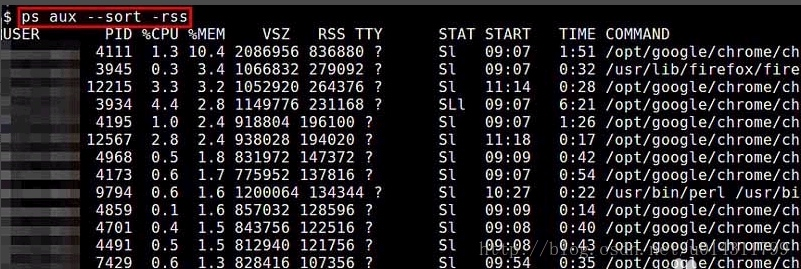

技术 | Linux常用命令
1. 全文检索
find / -print -type f | xargs grep '/var/lib/psql/data'
2. 查看端口占用情况
lsof -i:端口号netstat -tunlp|grep 端口号
这两种方式都可以查看指定端口被哪个进程占用的情况。
3. 查看当前占用内存较多的程序
ps aux --sort -rss | more
命令说明： ps aux: 列出目前所有的正在内存当中的程序。 a显示终端上的所有进程,包括其他用户地进程(有的进程没有终端)。 -a 显示所有终端机下执行的进程。 -u 以用户为主的格式来显示进程状况。 -x 显示所有进程，不以终端机来区分。 a会包括其他用户(否则只有用户本身); x会包括其他终端; aux就可以包括内存所有;

命令结果说明：
USER：该 process 属于那个使用者账号的 PID ：该 process 的进程号 %CPU：该 process 使用掉的 CPU 资源百分比 %MEM：该 process 所占用的物理内存百分比 VSZ ：该 process 使用掉的虚拟内存量 (Kbytes) RSS ：该 process 占用的固定的内存量 (Kbytes) TTY ：该 process 是在那个终端机上面运作，若与终端机无关，则显示 ?，另外， tty1-tty6 是本机上面的登入者程序，若为 pts/0 等等的，则表示为由网络连接进主机的程序。 STAT：该程序目前的状态，主要的状态有 R ：该程序目前正在运作，或者是可被运作 S ：该程序目前正在睡眠当中 (可说是 idle 状态)，但可被某些讯号 (signal) 唤醒。 T ：该程序目前正在侦测或者是停止了 Z ：该程序应该已经终止，但是其父程序却无法正常的终止他，造成 zombie (疆尸) 程序的状态 START：该 process 被触发启动的时间 TIME ：该 process 实际使用 CPU 运作的时间 COMMAND：该程序的实际指令
4. Linux 查看CPU信息，机器型号，内存等信息
4.1. 系统
# uname -a # 查看内核/操作系统/CPU信息
# lsb_release -a # 查看操作系统版本 (适用于所有的linux，包括Redhat、SuSE、Debian等发行版，但是在debian下要安装lsb)
# cat /etc/issue | cat /etc/redhat-release # 查看CentOS操作系统版本。
# cat /proc/cpuinfo # 查看CPU信息
# hostname # 查看计算机名
# lspci -tv # 列出所有PCI设备
# lsusb -tv # 列出所有USB设备
# lsmod # 列出加载的内核模块
# env # 查看环境变量
4.2. 资源
# free -m # 查看内存使用量和交换区使用量
# df -h # 查看各分区使用情况
# du -sh <目录名> # 查看指定目录的大小
# grep MemTotal /proc/meminfo # 查看内存总量
# grep MemFree /proc/meminfo # 查看空闲内存量
# uptime # 查看系统运行时间、用户数、负载
# cat /proc/loadavg # 查看系统负载
4.3. 磁盘和分区
# mount | column -t # 查看挂接的分区状态
# fdisk -l # 查看所有分区
# swapon -s # 查看所有交换分区
# hdparm -i /dev/hda # 查看磁盘参数(仅适用于IDE设备)
# dmesg | grep IDE # 查看启动时IDE设备检测状况
4.4. 网络
# ifconfig # 查看所有网络接口的属性
# iptables -L # 查看防火墙设置
# route -n # 查看路由表
# netstat -lntp # 查看所有监听端口
# netstat -antp # 查看所有已经建立的连接
# netstat -s # 查看网络统计信息
4.5. 进程
# ps -ef # 查看所有进程
# top # 实时显示进程状态
# jps # 查看java进程
4.6. 用户
# w # 查看活动用户
# id <用户名> # 查看指定用户信息
# last # 查看用户登录日志
# cut -d: -f1 /etc/passwd # 查看系统所有用户
# cut -d: -f1 /etc/group # 查看系统所有组
# crontab -l # 查看当前用户的计划任务
4.7. 服务
# chkconfig --list # 列出所有系统服务
# chkconfig --list | grep on # 列出所有启动的系统服务
4.8. 程序
# rpm -qa # 查看所有安装的软件包
4.9. 查看CPU信息（型号）
# cat /proc/cpuinfo | grep name | cut -f2 -d: | uniq -c
8 Intel(R) Xeon(R) CPU E5410 @ 2.33GHz
(看到有8个逻辑CPU, 也知道了CPU型号)
# cat /proc/cpuinfo | grep physical | uniq -c
4 physical id : 0
4 physical id : 1
(说明实际上是两颗4核的CPU)
# getconf LONG_BIT
32
(说明当前CPU运行在32bit模式下, 但不代表CPU不支持64bit)
# cat /proc/cpuinfo | grep flags | grep ' lm ' | wc -l
8
(结果大于0, 说明支持64bit计算. lm指long mode, 支持lm则是64bit)
再完整看cpu详细信息, 不过大部分我们都不关心而已.
# dmidecode | grep 'Processor Information'
4.10. 查看内存信息
# cat /proc/meminfo
# uname -a
Linux euis1 2.6.9-55.ELsmp #1 SMP Fri Apr 20 17:03:35 EDT 2007 i686 i686 i386 GNU/Linux
(查看当前操作系统内核信息)
# cat /etc/issue | grep Linux
Red Hat Enterprise Linux AS release 4 (Nahant Update 5)
(查看当前操作系统发行版信息)
4.11. 查看机器型号
# dmidecode | grep "Product Name"
4.12. 查看网卡信息
# dmesg | grep -i eth
5. 设置网络信息（以CentOS为例）
5.1. ifconfig查看当前网卡名称与信息
[root@node1 ~]# ifconfig
eth0 Link encap:Ethernet HWaddr 00:0C:29:A4:9D:C2
inet addr:192.168.129.137 Bcast:192.168.129.255 Mask:255.255.255.0
inet6 addr: fe80::20c:29ff:fea4:9dc2/64 Scope:Link
UP BROADCAST RUNNING MULTICAST MTU:1500 Metric:1
RX packets:908629128 errors:0 dropped:0 overruns:0 frame:0
TX packets:820212029 errors:0 dropped:0 overruns:0 carrier:0
collisions:0 txqueuelen:1000
RX bytes:101322481671 (94.3 GiB) TX bytes:109980885936 (102.4 GiB)
lo Link encap:Local Loopback
inet addr:127.0.0.1 Mask:255.0.0.0
inet6 addr: ::1/128 Scope:Host
UP LOOPBACK RUNNING MTU:65536 Metric:1
RX packets:90328695 errors:0 dropped:0 overruns:0 frame:0
TX packets:90328695 errors:0 dropped:0 overruns:0 carrier:0
collisions:0 txqueuelen:0
RX bytes:6989862905 (6.5 GiB) TX bytes:6989862905 (6.5 GiB)
5.2. 设置网络信息
vi /etc/sysconfig/network-scripts/ifcfg-eth0
内容示例：
DEVICE=eth0
TYPE=Ethernet
ONBOOT=yes
NM_CONTROLLED=yes
BOOTPROTO=none
DEFROUTE=yes
IPV4_FAILURE_FATAL=yes
IPV6INIT=no
NAME="System eth0"
HWADDR=00:0C:29:A4:9D:C2
IPADDR=192.168.129.137
PREFIX=24
GATEWAY=192.168.129.10
UUID=5fb06bd0-0bb0-7ffb-45f1-d6edd65f3e03
LAST_CONNECT=1516781563
DNS1=202.102.192.68
5.3. 重新网卡
service network restart
6. Linux基本操作（以CentOS 7.2为例）
6.1. 设置主机名
//永久性的修改主机名称，重启后能保持修改后的。
hostnamectl set-hostname xxx
或者修改/etc/hostname。
6.2. 创建用户并添加sudo权限
#添加用户组dev
groupadd dev
#添加libb用户，并归属于dev组（增加-m 自动创建目录）
useradd -m -g dev libb
#给tydic用户改密码
passwd libb
#给已有的用户增加工作组
gpasswd -a user group
#查看组以及组员
cat /etc/group
6.3. 添加sudo权限
#sudoers 文件添加可写权限
chmod -v u+w /etc/sudoers
#打开sudoers文件添加
#表示dev组下所有用户都可以执行sudo，且不用密码
%dev ALL=(ALL) NOPASSWD: ALL
#表示libb用户可以执行sudo，且不用密码
libb ALL=(ALL) NOPASSWD: ALL
#表示libb用户可以执行sudo
libb ALL=(ALL) ALL
#最后取消sudoers 文件可写权限
chmod -v u-w /etc/sudoers
6.4. 关闭防火墙
#firewall-cmd --state // 查看防火墙状态
# systemctl stop firewalld.service #停止firewall
# systemctl disable firewalld.service #禁止firewall开机启动
6.5. 配置yum源
不建议使用CentOS 7 自带的yum源，因为安装软件和依赖时会非常慢甚至超时失败。这里，我们使用阿里云的源予以替换，执行如下命令，替换文件 /etc/yum.repos.d/CentOS-Base.repo。
# wget -O /etc/yum.repos.d/CentOS-Base.repo http://mirrors.aliyun.com/repo/Centos-7.repo
# yum makecache
7. SSH免密登录
比如：有两台服务器 Node1 与 Node2，希望彼此SSH免密登录
先在两台服务器都执行以下命令：
# ssh-keygen -t rsa
# cat ~/.ssh/id_rsa.pub >> ~/.ssh/authorized_keys
然后在每台服务器都执行：
scp xxx@Nodex:~/.ssh/id_rsa.pub ~/.ssh/tmp
# 如：scp root@192.168.129.114:~/.ssh/id_rsa.pub ~/.ssh/tmp
cat ~/.ssh/tmp >> ~/.ssh/authorized_keys
rm -rf ~/.ssh/tmp
8. ChangeLog
- 20190620 | 增加「配置yum源」
- 20190618 | 增加「Linux基本操作命令」
- 20190612 | 增加「查看当前占用内存较多的程序」
- 20190605 | 增加「查看端口占用情况」
- 20180712 | 创建文档